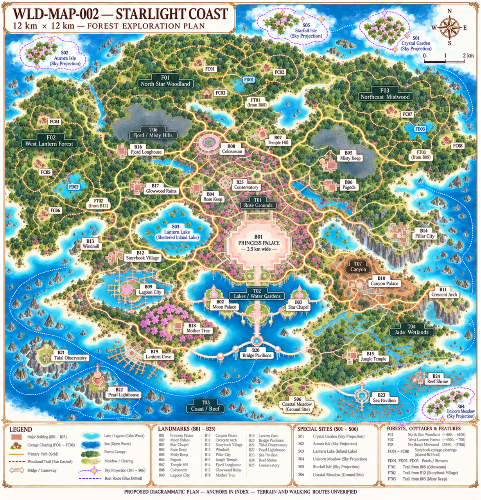
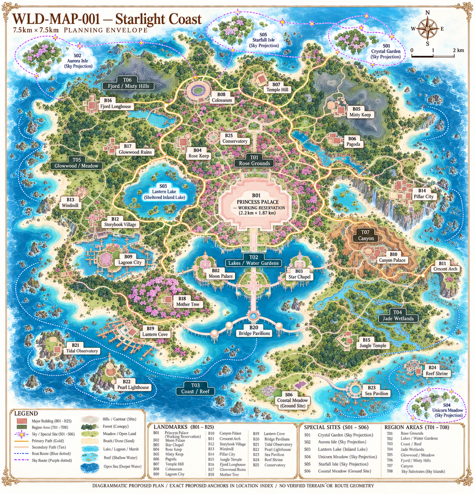

WLD-MAP-002 — Forest exploration
Plan and limits · Forests and cottages · Cottage anchors · Layout JSON
Current12km forest/cottage proposal

Historical7.5km map — obsolete palace label

Original expanded world illustration

Expanded draft missingFC03 · Earlier oblique draft